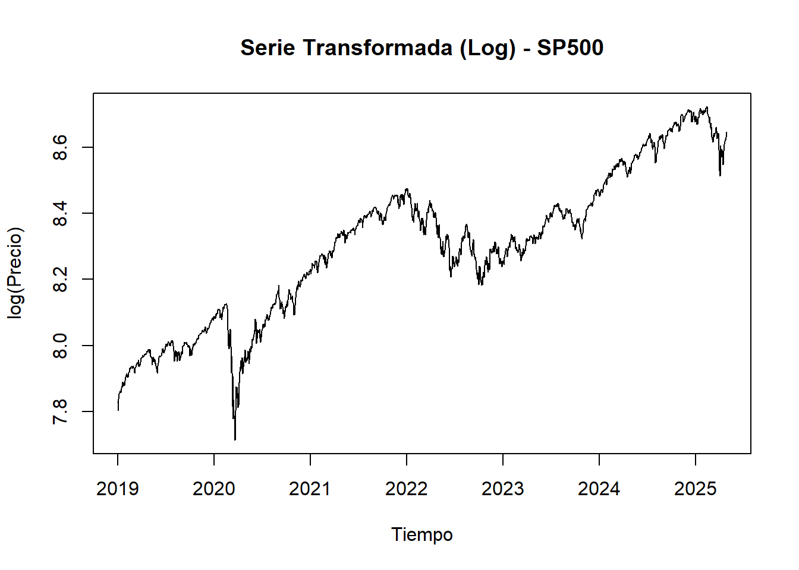

Chapter 4 Desarrollo Actividad 3.
4.1 Validación de supuestos e implementación de transformaciones requeridas en las series.
4.1.1 Procesos implementados.
Antes de aplicar modelos de pronóstico, es esencial garantizar que las series de tiempo cumplan ciertos supuestos que permiten una estimación confiable y precisa. En esta etapa del análisis, nos enfocamos en evaluar tres aspectos fundamentales de cada índice bursátil: variabilidad relativa, estabilidad estadística (estacionariedad) y la necesidad de transformaciones.
1. Análisis de la Variabilidad Relativa.
Cada serie temporal fue evaluada con base en su coeficiente de variación (CV), que representa la relación entre la desviación estándar y la media de la serie. Este valor permite determinar si la serie presenta heterocedasticidad, es decir, si su variabilidad aumenta proporcionalmente con su nivel.
Criterio aplicado: Si el coeficiente de variación es mayor a 0.2, se considera que la serie tiene una alta variabilidad relativa y, por tanto, es candidata a una transformación logarítmica.
2. Transformación Logarítmica.
Cuando una serie mostró un CV > 0.2, se aplicó una transformación logarítmica. Esta transformación tiene como objetivo estabilizar la varianza, lo cual es crucial para mantener la consistencia de los modelos predictivos. La transformación convierte cambios absolutos crecientes en cambios relativos constantes, facilitando la detección de patrones.
Resultado: En los índices SP500, Nasdaq y Nikkei225, por ejemplo, se aplicó esta transformación al superar el umbral de CV.
3. Evaluación de Estacionariedad con Dickey-Fuller.
Para verificar la estabilidad estadística de la serie en el tiempo (es decir, su estacionariedad), se utilizó la prueba de Dickey-Fuller aumentada (ADF). Esta prueba contrasta la hipótesis nula de que la serie no es estacionaria.
Criterio aplicado: Si el p-valor obtenido es menor a 0.05, se rechaza la hipótesis nula y se considera que la serie es estacionaria. Si el p-valor es mayor, se concluye que la serie no es estacionaria y se requiere una diferenciación.
4. Diferenciación:
Cuando fue necesario, se aplicó la diferenciación de primer o segundo orden, utilizando la función ndiffs(), hasta lograr que la serie cumpla con el criterio de estacionariedad (p-valor < 0.05 en la prueba ADF aplicada a la serie diferenciada).
4.1.2 Resumen del análisis de estacionariedad por índice bursátil
SP500
Transformación logarítmica: Sí (CV = 0.225)
p-valor Dickey-Fuller: 0.00848
¿Diferenciación aplicada?: No. La serie ya es estacionaria.
DowJones
Transformación logarítmica: No (CV = 0.165)
p-valor Dickey-Fuller: 0.00413
¿Diferenciación aplicada?: No. La serie ya es estacionaria.
Nasdaq
Transformación logarítmica: Sí (CV = 0.263)
p-valor Dickey-Fuller: 0.02449
¿Diferenciación aplicada?: No. La serie ya es estacionaria.
DAX
Transformación logarítmica: No (CV = 0.185)
p-valor Dickey-Fuller: 0.09312 (no estacionaria)
Diferenciación aplicada: Sí, orden 1
p-valor tras diferenciación: 0.00000
Resultado final: La serie diferenciada es estacionaria.
CAC40
Transformación logarítmica: No (CV = 0.156)
p-valor Dickey-Fuller: 0.00247
¿Diferenciación aplicada?: No. La serie ya es estacionaria.
FTSE100
Transformación logarítmica: No (CV = 0.093)
p-valor Dickey-Fuller: 0.00478
¿Diferenciación aplicada?: No. La serie ya es estacionaria.
Nikkei225
Transformación logarítmica: Sí (CV = 0.208)
p-valor Dickey-Fuller: 0.00237
¿Diferenciación aplicada?: No. La serie ya es estacionaria.
HangSeng
Transformación logarítmica: No (CV = 0.182)
p-valor Dickey-Fuller: 0.01316
¿Diferenciación aplicada?: No. La serie ya es estacionaria.
ShanghaiComposite
Transformación logarítmica: No (CV = 0.078)
p-valor Dickey-Fuller: 0.00048
¿Diferenciación aplicada?: No. La serie ya es estacionaria.
4.1.4 Implementación de procesos sobre los índices bursátile en tres etapas: limpieza, transformación (si aplica), y verificación de estacionariedad, con visualizaciones intermedias.
Code
# Lista para guardar las series procesadas
series_preparadas <- list()
analizar_estacionariedad_transformacion <- function(serie_zoo, nombre_indice) {
cat("\n\n==================================================\n")
cat("ANÁLISIS DE:", nombre_indice, "\n")
cat("==================================================\n")
# Limpieza de la serie
serie <- na.omit(serie_zoo)
ts_serie <- ts(as.numeric(serie), frequency = 252, start = c(2019, 1))
# Coeficiente de variación
coef_var <- sd(ts_serie) / mean(ts_serie)
necesita_log <- coef_var > 0.2
if (necesita_log) {
ts_trans <- log(ts_serie)
plot(ts_trans, main = paste("Serie Transformada (Log) -", nombre_indice),
xlab = "Tiempo", ylab = "log(Precio)")
cat("Transformación logarítmica aplicada (CV =", round(coef_var, 3), ")\n")
} else {
ts_trans <- ts_serie
plot(ts_trans, main = paste("Serie Original -", nombre_indice),
xlab = "Tiempo", ylab = "Precio")
cat("No se aplica transformación logarítmica (CV =", round(coef_var, 3), ")\n")
}
# Prueba Dickey-Fuller
prueba_df <- ur.df(ts_trans, type = "trend", selectlags = "AIC")
pvalor_df <- summary(prueba_df)@testreg$coefficients[2, 4]
cat("p-valor Dickey-Fuller:", round(pvalor_df, 5), "\n")
# Evaluar si se requiere diferenciación
if (pvalor_df < 0.05) {
cat("La serie transformada es estacionaria. No se aplica diferenciación.\n")
serie_final <- ts_trans
diferenciacion_txt <- "No"
} else {
d <- ndiffs(ts_trans)
ts_diff <- diff(ts_trans, differences = d)
plot(ts_diff, main = paste("Serie Diferenciada (d =", d, ") -", nombre_indice),
xlab = "Tiempo", ylab = "Diferencia")
cat("Serie NO estacionaria. Se aplica diferenciación de orden:", d, "\n")
prueba_df_diff <- ur.df(ts_diff, type = "drift", selectlags = "AIC")
pvalor_diff <- summary(prueba_df_diff)@testreg$coefficients[2, 4]
cat("p-valor Dickey-Fuller tras diferenciación:", round(pvalor_diff, 5), "\n")
if (pvalor_diff < 0.05) {
cat("La serie diferenciada ahora es estacionaria.\n")
} else {
cat("Incluso tras diferenciación, la serie NO es estacionaria.\n")
}
serie_final <- ts_diff
diferenciacion_txt <- paste("Sí, orden", d)
}
# Guardar la serie transformada
series_preparadas[[nombre_indice]] <<- serie_final
# Guardar en tabla resumen
resumen_estacionariedad <<- rbind(
resumen_estacionariedad,
data.frame(
Indice = nombre_indice,
CV = round(coef_var, 3),
LogTransform = ifelse(necesita_log, "Sí", "No"),
DickeyFuller_pvalor = round(pvalor_df, 5),
Diferenciacion = diferenciacion_txt
)
)
}4.1.5 Iteramos los indices bursatiles sobre la función realizada.
Code
##
##
## ==================================================
## ANÁLISIS DE: SP500
## ==================================================
## Transformación logarítmica aplicada (CV = 0.225 )
## p-valor Dickey-Fuller: 0.00848
## La serie transformada es estacionaria. No se aplica diferenciación.
##
##
## ==================================================
## ANÁLISIS DE: DowJones
## ==================================================## No se aplica transformación logarítmica (CV = 0.165 )
## p-valor Dickey-Fuller: 0.00413
## La serie transformada es estacionaria. No se aplica diferenciación.
##
##
## ==================================================
## ANÁLISIS DE: Nasdaq
## ==================================================## Transformación logarítmica aplicada (CV = 0.263 )
## p-valor Dickey-Fuller: 0.02449
## La serie transformada es estacionaria. No se aplica diferenciación.
##
##
## ==================================================
## ANÁLISIS DE: DAX
## ==================================================## No se aplica transformación logarítmica (CV = 0.185 )
## p-valor Dickey-Fuller: 0.09312## Serie NO estacionaria. Se aplica diferenciación de orden: 1
## p-valor Dickey-Fuller tras diferenciación: 0
## La serie diferenciada ahora es estacionaria.
##
##
## ==================================================
## ANÁLISIS DE: CAC40
## ==================================================## No se aplica transformación logarítmica (CV = 0.156 )
## p-valor Dickey-Fuller: 0.00247
## La serie transformada es estacionaria. No se aplica diferenciación.
##
##
## ==================================================
## ANÁLISIS DE: FTSE100
## ==================================================
## No se aplica transformación logarítmica (CV = 0.093 )
## p-valor Dickey-Fuller: 0.00478
## La serie transformada es estacionaria. No se aplica diferenciación.
##
##
## ==================================================
## ANÁLISIS DE: Nikkei225
## ==================================================## Transformación logarítmica aplicada (CV = 0.208 )
## p-valor Dickey-Fuller: 0.00237
## La serie transformada es estacionaria. No se aplica diferenciación.
##
##
## ==================================================
## ANÁLISIS DE: HangSeng
## ==================================================## No se aplica transformación logarítmica (CV = 0.182 )
## p-valor Dickey-Fuller: 0.01316
## La serie transformada es estacionaria. No se aplica diferenciación.
##
##
## ==================================================
## ANÁLISIS DE: ShanghaiComposite
## ==================================================## No se aplica transformación logarítmica (CV = 0.078 )
## p-valor Dickey-Fuller: 0.00048
## La serie transformada es estacionaria. No se aplica diferenciación.4.2 Tabla de resumen.
Code
| Indice | CV | LogTransform | DickeyFuller_pvalor | Diferenciacion |
|---|---|---|---|---|
| SP500 | 0.225 | Sí | 0.00848 | No |
| DowJones | 0.165 | No | 0.00413 | No |
| Nasdaq | 0.263 | Sí | 0.02449 | No |
| DAX | 0.185 | No | 0.09312 | Sí, orden 1 |
| CAC40 | 0.156 | No | 0.00247 | No |
| FTSE100 | 0.093 | No | 0.00478 | No |
| Nikkei225 | 0.208 | Sí | 0.00237 | No |
| HangSeng | 0.182 | No | 0.01316 | No |
| ShanghaiComposite | 0.078 | No | 0.00048 | No |